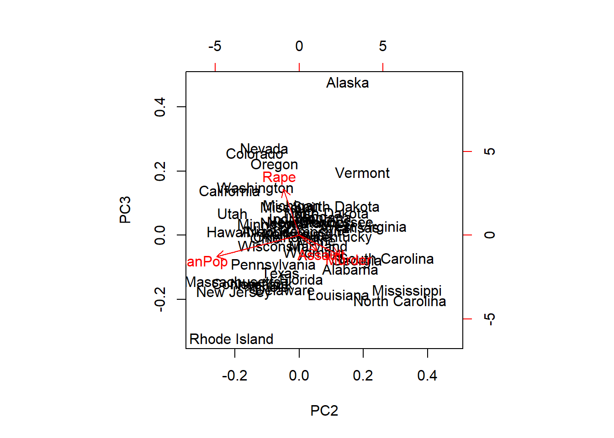
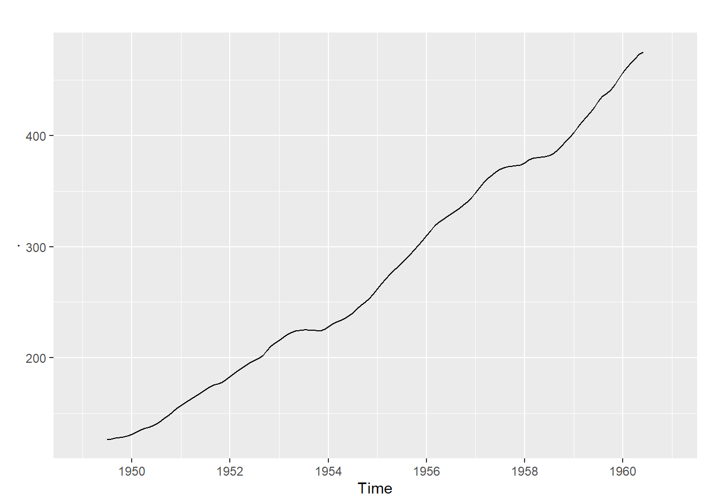
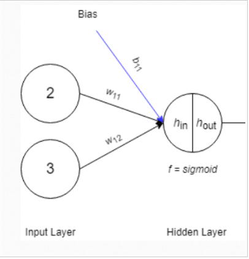
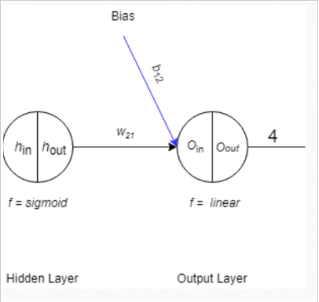

FAQ
April 17, 2020
Pendahuluan
Algoritma menyediakan pelatihan untuk membantu para pekerja profesional maupun pelajar untuk mencapai keterampilan dasar dalam berbagi bidang data science yang terdiri dari: Data Visualization, Machine Learning, Data Modelling, Inferensial Statistik, dll. Kumpulan FAQ ini diproduksi oleh tim Algoritma untuk membantu para peserta Data Science Academy atau khalayak umum mengenai pertanyaan pertanyaan yang sering ditemukan mengenai topik machine learning.
Bab 1 Regression Model
1.1 FAQ
Bagaimana penanganan data kategorik pada model linear regression?
Dengan menggunakan function
lmpada R otomatis akan mengubah tipe data kategorik menjadi dummy variabel. Dummy variable berfungsi untuk mengkuantitatifkan variabel yang bersifat kualitatif (kategorik). Dummy variabel hanya mempunyai dua nilai yaitu 1 dan 0. Dummy memiliki nilai 1 untuk salah satu kategori dan nol untuk kategori yang lain. Jika terdapat sebanyakkkategori untuk suatu prediktor maka akan ditransformasi menjadik-1dummy.Mengapa untuk asumsi normality yang harus berdistribusi normal adalah error/residual ?
Jika residual berdistribusi normal, itu artinya residual cenderung berkumpul di titik sekitar 0, dapat dikatakan hasil prediksi tidak terlalu melenceng jauh dari data actual.
Error yang tidak berdistribusi normal disebabkan oleh:
- distribusi target variabel memang tidak normal
- Model yang digunakan tidak cocok, misal hubungan antara prediktor dengan target tidak linier melainkan kudratik/eksponensial/dll walaupun target variabel memiliki distribusi normal.
- Selain itu, error harus berdistribusi normal terkait dengan pengujian-pengujian parameter (beta/koefisien regresi) secara statistik (F-test, t-test, dan confidence interval).
- Terdapat banyak data outlier
Untuk prediktor kategorik, bagaimana jika terdapat salah satu level yang tidak signifikan (p value > alpha)? apakah prediktor tersebut masih dianggap signifikan mempengaruhi target?
Ketika terdapat salah satu level pada variabel kategori yang tidak signifikan, salah satu penyebab yang sering ditemui karena jumlah observasi pada level tersebut sangat sedikit dibandingkan dengan level lainnya. Jika hal tersebut terjadi kita perlu mempertimbangkan
business questiondari model tersebut, tentunya ketika kita hanya membuang level yang tidak signifikan kemampuan model tidak dapat memprediksi pada salah satu level tersebut. Ketika kita memiliki kebutuhan untuk variabel tersebut dan salah satu level signifikan, kita dapat menganggap level lainnya juga signifikan.Pada fungsi
lmsudah otomatis melakukan transformasi data kategorik dengan level pertama yang dijadikan basis. Bagaimana jika dilakukan reorder level (mengubah urutan level), apakah akan mengubah hasil pemodelan?Hasil pemodelan tidak akan berubah, mengubah urutan level hanya akan mengubah basis yang digunakan.
Bagaimana jika terdapat prediktor yang tidak signifikan, tetapi secara bisnis seharusnya prediktor tersebut berpengaruh terhadap target?
Ketika variabel yang kita gunakan tidak signifikan secara statistik, namun secara bisnis berpengaruh terhadap target yang dimiliki, kita akan tetap mempertahankan variabel tersebut, banyak faktor yang menyebabkan variabel tersebut tidak signikan, bisa jadi karena data yang dimiliki tidak cukup banyak, banyak data oulier, atau ragam data yang hanya sedikit.
Mengapa perlu dilakukan pengecekkan asumsi pada metode regresi linier?
Pengecekkan asumsi dilakukan terkait dengan pengujian-pengujian parameter (beta/koefisien regresi) secara statistik (F-test, t-test, dan confidence interval). Ketika semua asumsi terpenuhi model dapat dikatakan
BLUE(Best Linear Unbiased Estimator).Jika sudah dilakukan berbagai alternatif untuk pemenuhan asumsi, namun masih terdapat asumsi yang tidak terpenuhi apa yang harus dilakukan?
Ketika sudah dilakukan berbagai alternatif untuk memenuhi asumsi namun asumsi masih tidak terpenuhi, itu artinya data yang kita miliki tidak cocok menggunakan regresi linear, dapat dicoba dengan model lain.
Bagaimana jika diperoleh nilai AIC negatif?
AIC dapat bernilai negatif atupun positif yang disebabkan oleh nilai dari fungsi maksimum likelihood berikut:
AIC = 2k − 2ln(L), dimanakmerupakan jumlah parameter (jumlah prediktor dan intersep) danLmerupakan nilai dari fungsi maksimum likelihood.Namun, pada pemilihan model nilai AIC yang dilihat adalah nilai AIC yang sudah diabsolutkan. Sehingga tanda negatif/positif pada hasil AIC tidak berpengaruh dalam proses pemilihan model. Model yang dipilih adalah model yang memiliki nilai abolut AIC terkecil, hal ini mengindikasikan bahwa semakin sedikit model tersebut kehilangan informasi yang dibawa. Negative values for AIC
Perbedaan dari R-squared dan Adjusted R-squared?
R-squared memperhitungkan variasi dari semua variabel independen terhadap variabel dependen. Sehingga setiap penambahan variabel independen akan meningkatkan nilai R-squared. Sedangkan pada adjusted r-squared akan memperhitungan variasi dari variabel independen yang signifikan terhadap variabel dependen. Oleh karena itu, pada multiple linear regression disarankan untuk melihat nilai Adjusted R-squared.
Apa itu outlier?
Data observasi yang terlihat sangat berbeda jauh dari observasi-observasi lainnya dan muncul dalam bentuk nilai ekstrim baik untuk sebuah variabel tunggal atau kombinasi.
Cara yang dapat dilakukan untuk tuning model regresi?
Banyak cara yang dapat dilakukan untuk tuning model regresi, salah satunya adalah dengan deteksi outlier pada data observasi. Deteksi outlier dari data yang dimiliki, apakah dengan atau tanpa data outlier tersebut akan mengganggu perfomance model yang dimiliki.
Untuk apa ada p-value di output regresi jika sebelumnya kita sudah melakukan uji korelasi?
Uji korelasi pada preprocessing data dilakukan untuk melihat secara umum apakah variabel prediktor dan target terdapat hubungan kuat atau tidak. Sedangkan uji pvalue pada output regresi pada setiap variabel prediktor menyatakan apakah setiap variabel prediktor benar-benar mempengaruhi target secara statistik atau tidak.
Uji statistik apa yang dapat digunakan untuk uji normalitas dengan lebih dari 5000 observasi?
Uji normalitas dengan observasi yang lebih dari 5000 dapat menggunakan uji Kolmogorov Smirnov dengan code sebagai berikut:
Bagaimana jika target variabel yang dimiliki berupa bilangan diskrit, apakah bisa dilakukan analisis regresi?
Untuk analisis regresi dengan target variabel berupa bilangan diskrit dapat menggunakan regresi poisson. Untuk detail lengkapnya dapat dilihat di link berikut: Regresi Poisson
Bagaimana jika ingin melakukan
linearity testsekaligus untuk setiap predictor terhadaptarget variable?
Untuk melakukan linearity test, kita dapat menggunakan function cor.test
copiers <- read.csv("data/01-RM/copiers.csv") %>% select(-Row.ID)
cor.test(copiers$Sales, copiers$Profit)#>
#> Pearson's product-moment correlation
#>
#> data: copiers$Sales and copiers$Profit
#> t = 21.26, df = 60, p-value < 0.00000000000000022
#> alternative hypothesis: true correlation is not equal to 0
#> 95 percent confidence interval:
#> 0.9013320 0.9632858
#> sample estimates:
#> cor
#> 0.9395785Dengan Pearson’s hypothesis test sebagai berikut:
H0: Korelasi tidak signifikan
H1: Korelasi signifikan
Sedangkan untuk melakukan linearity test sekaligus untuk setiap predictor dapat membuat function sebagai berikut:
cor.test.all <- function(data,target) {
names <- names(data %>% select_if(is.numeric))
df <- NULL
for (i in 1:length(names)) {
y <- target
x <- names[[i]]
p_value <- cor.test(data[,y], data[,x])[3]
temp <- data.frame(x = x,
y = y,
p_value = as.numeric(p_value))
df <- rbind(df,temp)
}
return(df)
}
cor.test.all(data = copiers,target ="Profit")#> x y p_value
#> 1 Sales Profit 0.00000000000000000000000000001271056
#> 2 Quantity Profit 0.00000000076036803959617475451651658
#> 3 Discount Profit 0.00044956416337473974241881191638015
#> 4 Profit Profit 0.000000000000000000000000000000000001.2 Mathematics Concept
Untuk mengestimasi nilai koefisien (beta), pertama-tama coba ingat kembali beberapa konsep pada workshop “Practical Statistics”. Variance merupakan nilai yang menggambarkan seberapa bervariasi/beragamnya suatu variabel bertipe numerik/angka. Semakin besar nilai variance maka semakin beragam nilai dalam satu variabel (heterogen), sedangkan semakin kecil nilai variance maka semakin sama/mirip setiap observasi pada satu variabel (homogen). Data yang observasinya bernilai sama, maka variance sama dengan 0.
Sementara covariance merupakan nilai yang menggambarkan hubungan (positif/negatif/tidak ada hubungan) antara dua variabel numerik. Namun covariance tidak dapat menggambarkan seberapa erat/kuat hubungan tersebut karena nilai covariance tidak memilki batasan yang mutlak (- inf, + inf).
Dalam notasi matematika, anggap kita memiliki data yang terdiri dari 2 variabel, yaitu, \(({X_i}, {Y_i})\), maka secara empiris nlai covariance diperoleh dari:
\[Cov(X,Y) = \frac{1}{n-1}\sum\limits_{i=1}^{n}({X_i}-\bar{X})({Y_i}-\bar{Y})\]
bisa juga diperoleh dari,
\[Cov(X,Y) = \frac{1}{n-1}(\sum\limits_{i=1}^{n}{X_i}{Y_i} - n\bar{X}\bar{Y})\]
Jika formula dari covariance cukup rumit, coba ingat kembali formula dari variance:
\[S^2 = \frac{1}{n-1}\sum\limits_{i=1}^{n}(X_i - \bar{X})^2\]
pahami bahwa perbedaan variance dan covariance adalah variance hanya mengacu pada 1 variabel, sedangkan covariance mengacu pada 2 variabel. Maka, formula dari covariance:
\[Cov(X,Y) = \frac{1}{n-1}\sum\limits_{i=1}^{n}({X_i}-\bar{X})({Y_i}-\bar{Y})\]
Seperti yang telah dijelaskan di atas bahwa covariance menjelaskan jenis hubungan antara 2 variabel numerik. Namun, kita tidak dapat menilai seberapa erat/kuat hubungan antara keduanya karena interval nilai covariance yang tidak memiliki batasan. Oleh karena itu, kita bisa melakukan standarization terlebih dahulu terhadap 2 variabel numerik tersebut yang mengacu pada definisi correlation:
\[Cor(X, Y) = \frac{Cov(X,Y)}{{S_x}{S_y}}\]
beberapa fakta mengenai correlation:
- Cor(X,Y) = Cor(Y,X)
- -1 <= Cor(X,Y) <= 1
- Nilai correlation mendekati 1 artinya kedua variabel berhubungan erat dan hubungannya linier positif
- Nilai correlation mendekati -1 artinya kedua variabel berhubungan erat dan hubungannya linier negatif
- Nilai correlation mendekati 0 artinya kedua variabel tidak saling berhubungan secara linier
Untuk menggambarkan persebaran observasi antara x dan y, dapat dilakukan dengan menarik suatu garis lurus yang menggambarkan keseluruhan persebaran data. Dimana, untuk menarik suatu garis lurus diperlukan titik awal (\(b0\)) dan kemiringan garis (\(b1\)).
Lalu bagaimana cara mengestimasi \(b0\) dan \(b1\) yang optimal (dimana garis linier dapat menggambarkan keseluruhan persebaran data). Kita bisa menggunakan konsep kuadrat terkecil, untuk menemukan kombinasi \(b0\) dan \(b1\) yang meminimumkan jarak kuadrat antara titik pengamatan dengan garis linier:
\[\sum\limits_{i=1}^{n}\{{Y_i} - (\beta_0 + {\beta_1}{X_i} )\}^2\]
- Estimasi slope:
\[\hat{\beta}_1 = Cor(Y,X)\frac{Sd(Y)}{Sd(X)}\]
- Estimasi intercept:
\[\hat{\beta}_0 = \bar{Y} - \hat{\beta}_1\bar{X}\]
R-square secara definisi adalah persentase total keragaman suatu target variabel yang dapat dijelaskan oleh prediktor variabel (model), dengan formula:
\[R^2 = 1 - \frac{\sum\limits_{i=1}^n (\hat{Y_i} - \bar{Y})^2}{\sum\limits_{i=1}^n(Y_i - \bar{Y})^2}\]
Beberapa fakta tentang R-square (\(R^2\)):
- \(R^2\) adalah persentase total keragaman suatu target variabel yang dapat dijelaskan oleh model regresi
- \(0 \leq R^2 \leq 1\)
Salah satu alat statistik yang dapat digunakan untuk mengecek ada/tidak multicolinearity adalah Variance Inflation Factor (VIF). VIF mengukur peningkatan estimasi koefisien beta, jika antar prediktor saling berkorelasi. Secara matematis, nilai VIF diperoleh dengan meregresikan setiap prediktor dengan prediktor lain. Contoh: diketahui terdapat \(X1, X2, ..., Xn\), nilai VIF untuk \(X1\) diperoleh dari hasil regresi \(X1\) dengan \(X2, ..., Xn\), dst. Hasil regresi tersebut kemudian diterapkan pada formula berikut:
\[VIF = \frac{1}{1-R^2(x)}\]
Secara umum jika nilai VIF yang diperoleh lebih besar atau sama dengan 10, mengindikasikan terjadi multicolinearity (antar prediktor saling berkorelasi kuat).
Bab 2 Classification 1
2.1 FAQ
Pada klasifikasi penentuan kelas didasarkan pada peluang, bagaimana jika peluang yang diperoleh sama besar, misal pada kasus klasifikasi biner diperoleh peluang masuk ke kelas 1 adalah 0.5 dan peluang masuk ke kelas 0 adalah 0.5?
Hal tersebut bergantung pada user yang menentukan threshold/batasan probability untuk masuk ke kelas 1 atau masuk ke kelas 0. Namun, pada umumnya jika diperoleh probability >= 0.5 maka observasi tersebut akan masuk ke kelas 1.
Untuk prediktor kategorik, bagaimana jika terdapat kategori yang tidak signifikan (p value > alpha)? apakah prediktor tersebut masih dianggap signifikan mempengaruhi target?
Untuk level yang menjadi basis akan dianggap signifikan, untuk level lainnya yang tidak signifikan artinya memang level tersebut tidak memberikan pengaruh terhadap target variabel. Solusi yang dapat dilakukan adalah bining (level tersebut dijadikan satu level yg mirip dan signifikan) atau menambahkan jumlah observasi pada level yang tidak signifikan tersebut.
Pada fungsi
lmsudah otomatis melakukan transformasi data kategorik dengan level pertama yang dijadikan basis. Bagaimana jika dilakukan reorder level (mengubah urutan level), apakah akan mengubah hasil pemodelan?Nilai pvalue pada setiap level tidak akan berubah ketika kita melakukan reorder level. Interpretasi untuk variable kategorik bergantung pada level yang dijadikan basis
Pengertian dari null deviance dan residual deviance pada output summary?
Null deviance menunjukkan seberapa baik target variabel diprediksi oleh model berdasarkan nilai intercept. Sedangkan residual deviance menunjukkan seberapa baik target variabel diprediksi oleh model berdasarkan intercept dan semua variabel independen yang digunakan.
Berikut merupakan link eksternal yang dapat dijadikan sebagai bahan referensi
Null deviance & Residual deviance
Apa itu
Fisher Scoringpada output summary?Fisher scoring adalah turunan dari metode Newton untuk mengatasi Maximum Likelihood. Fisher scoring memberikan informasi berapa banyak iterasi yang dilakukan pada model sehingga diperoleh nilai parameter.
Apa itu Maximum Likelihood Estimator (MLE)?
Parameter pada model logistik regression diperoleh dari pendekatan MLE. MLE merupakan pendekatan statistik untuk memperkirakan paramater pada model.
Pada kasus klasifikasi, kenapa pengukuran accuracy tidak cukup menjelaskan seberapa baik model yang diperoleh?
Untuk mengetahui seberapa baik perfomance model klasifikasi, tidak cukup dengan melihat nilai accuracy nya saja, karena accuracy menganggap sama penting untuk nilai false positive dan false negative. Kita membutuhkan perhitungan lain seperti precision dan recall, contohnya untuk memprediksi pasien mengidap kanker jinak atau ganas. Tentunya akan lebih berbahaya jika kemampuan model yang kita miliki cenderung lebih baik memprediksi kanker ganas namun terprediksi menjadi jinak. Pada kasus ini karena kelas positif yang dimiliki adalah kanker ganas, maka kita akan mementingkan nilai recall lebih besar dibandingkan nilai pengukuran lainnya.
Permasalahan apa yang paling sering ditemui pada kasus klasifikasi?
Permasalahan besar kasus klasifikasi adalah dataset yang tidak seimbang. Contohnya pada case churn telekomunikasi, employee attrition, prediksi kanker, fraud detection, dan sebagainya. Dalam hal tersebut, biasanya jumlah kelas positif jauh lebih sedikit dibandingkan kelas negatif.
Misalkan pada kasus fraud detection, dari 1000 transaksi yang dimiliki, 10 diantaranya fraud, sedangkan sisanya tidak fraud. Kemudian perfomance model yang diperoleh sekitar 85%, mungkin terdengar sangat baik, namun pada kenyatannya tidak. Kemungkinan besar model tersebut hanya mampu memprediksi salah satu kelas kelas mayoritas yaitu yang tidak fraud, sedangkan kelas positif yang kita miliki sangat sedikit data yang dimiliki.
- Imbalance Target Variable
Pemodelan klasifikasi mulai banyak digunakan pada berbagai bidang industri, seperti perbankan untuk mendeteksi transaksi yang memiliki kecenderungan kecurangan atau memprediksi potensi kegagalan nasabah dalam membayar kredit/hutang, tranportasi (penerbangan) untuk memprediksi kemungkinan suatu penerbangan mengalami keterlambatan, digital marketing untuk memprediksi pelanggan yang loyal atau pelanggan yang memiliki potensi untuk kembali membeli produk yang dijual, kesehatan untuk memprediksi apakah seorang pasien positif terkena penyakit tertentu, dan masih banyak lagi.
Dari berbagai macam permasalahan klasifikasi tersebut tidak semua masalah klasifikasi memiliki jumlah target variabel yang seimbang (level yang mendominasi keseluruhan target merupakan kelas mayoritas dan level yang lebih kecil disebut kelas minoritas). Ketika kondisi seperti apa target variabel tidak memiliki proporsi yang seimbang ?


Hal tersebut akan berpengaruh terhadap kemampuan model untuk memprediksi target (model klasifikasi cenderung lebih pintar dalam memprediksi kelas mayoritas), karena model klasifikasi sangat bergantung pada jumlah setiap level target dalam proses learning nya (model klasifikasi akan melalui proses learning yang seimbang jika diberikan jumlah sampel yang seimbang pula). Hal ini menjadi masalah yang cukup serius, sehingga perlu dilakukan penanganan sebagai solusi permasalahan tersebut.
#>
#> no yes
#> 0.84 0.16Salah satu cara yang paling umum dilakukan adalah menyeimbangkan jumlah target variabel dengan metode sampling. Metode tersebut terbagi menjadi 2, yaitu downsampling dan upsampling.
Downsampling adalah proses sampling pada observasi kelas mayoritas sebanyak jumlah observasi pada kelas minoritas, tujuannya adalah menyamakan jumlah observasi pada kelas mayoritas dan minoritas. Sehingga model klasifikasi dapat melalui proses learning yang seimbang. Proses downsampling akan mengurangi jumlah observasi pada kelas mayoritas, sehingga memungkinkan terjadinya kehilangan informasi.
Upsampling adalah proses sampling pada observasi kelas minoritas sebanyak jumlah observasi pada kelas mayoritas, tujuannya adalah menyamakan jumlah observasi pada kelas mayoritas dan minoritas. Sehingga model klasifikasi dapat melalui proses learning yang seimbang. Proses upsampling akan menambah jumlah observasi pada kelas minoritas, sehingga memungkinkan terdapat data yang duplicate pada kelas minoritas.
Untuk melakukan downsampling dan upsampling dapat menggunakan fungsi pada library caret ataupun recipes. Berikut contoh downsampling dan upsampling dengan menggunakan fungsi pada library caret dan recipes
Sebelum menerapkan downsampling dan upsamling terlebih dahulu dilakukan cross validation, yaitu membagi data menjadi training set untuk proses pemodelan dan testing set untuk melakukan evaluasi. Cross validation akan dilakukan dengan menggunakan fungsi initial_split() dari library rsample. Fungsi tersebut akan melakukan proses sampling untuk cross validation dengan metode stratified random sampling, sehingga proporsi target variabel pada data awal, akan dipertahankan baik pada training set maupun testing set.
# define seed
set.seed(100)
# menentukan indeks untuk train dan test
splitted <- initial_split(data = attrition, prop = 0.75, strata = "attrition")
# mengambil indeks data train dengan fungsi `tarining()`
train <- training(splitted)
# mengambil indeks data test dengan fungsi `testing()`
test <- testing(splitted)#>
#> no yes
#> 0.84 0.16#>
#> no yes
#> 0.84 0.16Downsampling dan upsampling hanya akan dilakukan pada data train karena proses pembuatan model klasifikasi hanya dilakukan pada data train. Data test hanya digunakan untuk mengevaluasi model yang dihasilkan pada data train.
- Downsample
Untuk melakukan downsampling dengan library caret dapat menggunakan fungsi downSample().
#>
#> no yes
#> 0.5 0.5- Upsample
Untuk melakukan upsampling dengan library caret dapat menggunakan fungsi upSample().
#>
#> no yes
#> 0.5 0.5Berikut merupakan link eksternal yang dapat dijadikan sebagai bahan referensi downSample: Down- and Up-Sampling Imbalanced Data
- Downsample/Upsample Using
Recipes
Sama seperti saat menggunakan fungsi pada library caret, ketika menggunakan fungsi dari library recipes juga harus dilakukan cross validation terlebih dahulu. Perbedaan ketika menggunakan fungsi dari library recipes data train dan data test tidak langsung dimasukkan ke dalam sebuah objek melainkan dilakukan downsampling atau upsampling terlebih dahulu.
set.seed(417)
splitted_rec <- initial_split(data = attrition, prop = 0.8, strata = "attrition")
splitted_rec#> <1177/293/1470>Untuk melakukan downsampling atau upsampling menggunakan library recipes dapat menggunakan fungsi step_downsample() atau step_upsample() yang didefinisikan dalam sebuah recipe.
rec <- recipe(attrition ~ ., training(splitted)) %>%
# `step_downsample()` dapat diganti dengan `step_upsample()`
step_downsample(attrition, ratio = 1, seed = 100) %>%
prep()# membuat data train dengan fungsi `juice()`
train_rec <- juice(rec)
# membuat data test dengan fungsi `bake()`
test_rec <- bake(rec, testing(splitted))#>
#> no yes
#> 0.5 0.5Berikut merupakan link eksternal yang dapat dijadikan sebagai bahan referensi tidymodels/recipes
- Apa yang dimaksud dengan false positive dan false negative?
False positive adalah kasus dimana sisi negatif terprediksi sebagai positif. Contohnya, pasien terprediksi mengidap kanker ganas, namun data actual nya pasien tersebut mengidap kanker jinak.
False negative adalah kasus dimana sisi positif terprediksi sebagai negatif. Contohnya, pasien teprediksi mengidap kanker jinak, namun data actual nya pasien tersebut mengidap kanker ganas.
Bagaimana model regresi logistic regression menangani data kategorik?
Sama seperti kasus linear regression, pada logistic regression akan mengubah variabel kategorik menjadi dummy variabel.
Apa maksud dari nilai AIC?
AIC (Akaike Information Criterion) menggambarkan seberapa banyak informasi yang hilang pada model tersebut. AIC biasa digunakan untuk membandingkan beberapa model, karena berbeda dengan R-squared yang memiliki range semakin mendekati 1 semakin baik, AIC tidak memiliki batasan, jadi kita perlu membandingkannya dengan model lain.
Bagaimana cara untuk mengindikasi adanya perfect separation pada model?
Indikasi perfect separation dapat dilihat dari beberapa point berikut:
tidak ada prediktor yang signifikan padahal aic sangat kecil
terdapat 1 koefisien yang nilainya cukup besar dibandingkan yang lain
gunakan parameter
detect_separationuntuk mengetahui adanya perefect separation pada model:
library(brglm2)
glm(hon ~ female + read + math + write, data=honors, family="binomial", method = "detect_separation")#> Separation: TRUE
#> Existence of maximum likelihood estimates
#> (Intercept) female read math write
#> -Inf -Inf -Inf -Inf Inf
#> 0: finite value, Inf: infinity, -Inf: -infinityParameter detect_separation akan menghasilkan output TRUE or FALSE. Ketika TRUE artinya terdapat perfect separation pada model. Untuk mengetahui detail variabel mana yang merupakan perfect separtion, kita perlu amati dari output summary() model.
Bab 3 Classification 2
3.1 FAQ
Dari berbagai metode klasifikasi yang telah dipelajari (logistic regression, KNN, naive bayes, decision tree, dan random forest), bagaimana pemilihan dalam penggunaan metode tersebut?
Pemilihan metode klasifikasi bergantung pada tujuan analisis yang dilakukan. Secara umum tujuan pemodelan klasifikasi adalah melakukan analisa terkait hubungan prediktor dengan target variabel atau melakukan prediksi.
Jika tujuannya adalah untuk melakukan analisa terkait hubungan antara prediktor dan target variabel dapat menggunakan logistic regression atau decision tree. Berikut kelebihan dan kekurangan dari kedua metode tersebut.
Logistic regression:
- model klasifikasi yang cukup sederhana dan komputasinya cepat (+)
- interpretable (+)
- tidak mengharuskan scaling data (+)
- baseline yang baik sebelum mencoba model yang lebih kompleks (+)
- memerlukan ketelitian saat melakukan feature engineering karena sangat bergantung pada data yang fit
- tidak dapat mengevaluasi hubungan yang tidak linier antara log of odds dan variabel prediktor(-)
mengharuskan antar prediktornya tidak saling terkait (cukup kaku) (-)
Decision tree:
- tidak mengharuskan scaling data (+)
- dapat mengevaluasi hubungan yang tidak linier (+)
- antar prediktornya boleh saling berkaitan (+)
- interpretable (+)
- decision tree yang terbentuk cenderung tidak stabil (sedikit perubahan pada data akan merubah struktur pohon yang dihasilkan) (-)
- komputasi relatif lebih lama (-)
cenderung overfitting (-)
Jika tujuannya adalah melakukan prediksi dengan harapan tingkat akurasi yang tinggi, bisa menggunakan random forest. Karena metode ini merupakan metode klasifikasi yang menggabungkan beberapa metode, sehingga cukup robust (tidak sensitif) terhadap outlier, antar prediktor boleh saling berkaitan, bahkan mengatasi overfitting.
Naive bayes umumnya digunakan untuk masalah-masalah yang berkaitan dengan klasifikasi text. Berikut merupakan link eksternal yang dapat dijadikan sebagai bahan referensi The Naive Bayes Classifier
- Apakah k-fold cross validation dapat digunakan untuk metode klasifikasi lain (selain random forest)?
k-fold cross validation dapat digunakan untuk semua metode klasifikasi bahkan di luar metode klasifikasi yang telah dipelajari. Namun, karena k-fold cross validation tidak memperlihatkan hasil pemodelan untuk semua subset data (hanya mengambil yang terbaik, yaitu tingkat akurasi tertinggi), maka tetap perlu dilakukan cross validation untuk melakukan evaluasi model. Berikut contoh k-fold cross validation untuk metode lain (selain random forest).
set.seed(417)
ctrl <- trainControl(method = "repeatedcv", number = 5, repeats = 3)
# parameter method dapat disesuaikan dengan metode klasifikasi yang digunakan
model <- train(attrition ~ ., data = train, method = "ctree", trControl = ctrl)Apakah pada metode KNN, naive bayes, decision tree, dan random forest hasilnya dapat berupa probability?
Pada dasarnya semua metode klasifikasi akan menghasilkan probability, bukan langsung kelas. Namun, kebanyakan metode klasifikasi secara default di R langsung menghasilkan kelas (threshold 0.5). Untuk menghasilkan probability dapat menambahkan parameter
typesaat melakukanpredict(). Berikut beberapatypeuntuk metode klasifikasi yang dipelajari:
responseuntuk logistic regressionrawuntuk naive bayesprobabilityuntuk decision tree dan random forest
- Apakah metode naive bayes dapat diterapkan untuk prediktor bertipe numerik? peluang apa yang dihitung?
Naive bayes dapat diterapkan pada berbagai permasalahan klasifikasi bukan hanya pada klasifikasi text. Jika prediktor yang digunakan bertipe numerik naive bayes akan menghitung peluang rata-rata (mean) dan standard deviation (sd) untuk setiap level target. Berikut contoh naive bayes pada data iris.
#>
#> Naive Bayes Classifier for Discrete Predictors
#>
#> Call:
#> naiveBayes.default(x = X, y = Y, laplace = laplace)
#>
#> A-priori probabilities:
#> Y
#> setosa versicolor virginica
#> 0.3333333 0.3333333 0.3333333
#>
#> Conditional probabilities:
#> Sepal.Length
#> Y [,1] [,2]
#> setosa 5.006 0.3524897
#> versicolor 5.936 0.5161711
#> virginica 6.588 0.6358796
#>
#> Sepal.Width
#> Y [,1] [,2]
#> setosa 3.428 0.3790644
#> versicolor 2.770 0.3137983
#> virginica 2.974 0.3224966
#>
#> Petal.Length
#> Y [,1] [,2]
#> setosa 1.462 0.1736640
#> versicolor 4.260 0.4699110
#> virginica 5.552 0.5518947
#>
#> Petal.Width
#> Y [,1] [,2]
#> setosa 0.246 0.1053856
#> versicolor 1.326 0.1977527
#> virginica 2.026 0.2746501- Bagaimana cara menghapus
stopwordsdalam bahasa indonesia?
File stopwords dapat di download terlebih dahulu di link berikut. Kemudian import stopwords id.txt tersebut dengan menggunakan fungsi readLines().
# import Indonesia stopwords
stop_id <- readLines("data/03-C2/stopwords_id.txt")
# generate data frame
text <- data.frame(sentence = c("saya tertarik belajar data science di @algoritma :)",
"anda tinggal di Jakarta",
"Ingin ku merat🔥 na👍",
"selamat tahun baru #2020 !",
"pingin makan yang kek gitu"))Mengubah text dalam bentuk data frame ke bentuk corpus dengan menggunakan fungsi VectorSource() dan VCorpus() dari library tm. Setelah itu, baru dapat menghapus stopwords dengan menggabungkan fungsi tm_map() dan removeWords().
text_clean1 <- text %>%
pull(sentence) %>%
VectorSource() %>%
VCorpus() %>%
tm_map(removeWords, stop_id)
text_clean1[[1]]$content#> [1] " tertarik belajar data science @algoritma :)"- Bagaimana cara mengubah kata berimbuhan mejadi kata dasarnya saja dalam bahasa Indonesia?
Untuk mengubah kata berimbuhan menjadi kata dasar dalam bahasa Indonesia dapat menggunakan fungsi katadasaR() dari library katadasaR. Namun, fungsi tersebut hanya menerima 1 inputan (1 value) saja sehigga dibutuhkan fungsi sapply() untuk mengaplikasikan fungsi tersebut ke dalam 1 kalimat.
# membuat fungsi untuk mengubah kata berimbuhan menjadi kata dasar
kata_dasar <- function(x) {
paste(sapply(words(x), katadasaR), collapse = " ")
}Menggunakan fungsi di atas dengan menggabungkan fungsi tm_map() dan content_transformer().
text_clean2 <- text %>%
pull(sentence) %>%
VectorSource() %>%
VCorpus() %>%
tm_map(content_transformer(kata_dasar))
text_clean2[[1]]$content#> [1] "saya tarik ajar data science di @algoritma :)"- Bagaiamana cara menghapus emoticon dan emoji?
Untuk menghapus emoticon dan emoji dapat menggunakan fungsi replace_emoji() dan replace_emoticon() dari library textclean. Namun, fungsi tersebut hanya menerima tipe data berupa karakter sehingga harus diubah terlebih dahulu tipe datanya jika masih belum karakter.
text_clean3 <- text %>%
mutate(sentence = as.character(sentence)) %>%
pull(sentence) %>%
replace_emoji() %>%
replace_emoticon()
text_clean3#> [1] "saya tertarik belajar data science di @algoritma smiley "
#> [2] "anda tinggal di Jakarta"
#> [3] "Ingin ku merat<U+0001F525> na<U+0001F44D>"
#> [4] "selamat tahun baru #2020 !"
#> [5] "pingin makan yang kek gitu"- Bagaimana cara menghapus mention dan hashtag?
Untuk menghapus mention dan hashtag dapat menggunakan fungsi replace_hash() dan replace_tag() dari library textclean.
text_clean4 <- text %>%
mutate(sentence = as.character(sentence)) %>%
pull(sentence) %>%
replace_hash() %>%
replace_tag()
text_clean4#> [1] "saya tertarik belajar data science di :)"
#> [2] "anda tinggal di Jakarta"
#> [3] "Ingin ku merat<U+0001F525> na<U+0001F44D>"
#> [4] "selamat tahun baru !"
#> [5] "pingin makan yang kek gitu"- Bagaimana cara menghapus slang words?
Untuk menghapus slang words dapat menggunakan fungsi replace_internet_slang() dari library textclean.
slang_id <- read.csv("data/03-C2/colloquial-indonesian-lexicon.csv")
text_clean5 <- text %>%
mutate(sentence = as.character(sentence)) %>%
pull(sentence) %>%
replace_internet_slang(slang = paste0('\\b', slang_id$slang, '\\b') ,
replacement = slang_id$formal,
ignore.case = T)
text_clean5#> [1] "saya tertarik belajar data science di @algoritma :)"
#> [2] "anda tinggal di Jakarta"
#> [3] "Ingin ku merat<untuk+0001F525> nya<untuk+0001F44D>"
#> [4] "selamat tahun baru #2020 !"
#> [5] "pengin makan yang kayak begitu"Berikut link eksternal yang dapat dijadikan sebagai bahan referensi dalam melakukan cleaning text Text Cleaning Bahasa Indonesia dan Text Cleaning Bahasa Inggris
- Bagaimana penanganan terhadap data missing values?
Terdapat berbagai cara menangani data yang mengandung missing value. Cara yang paling sering digunakan untuk menangani data yang mengandung missing value, yaitu deletion, full analysis, dan imputation.
- Deletion
Deletion adalah membuang variabel/kolom pada data yang memiliki jumlah missing value (NA) melebihi 50% dari jumlah observasi. Hal ini menganggap bahwa variabel tersebut tidak banyak memberikan informasi pada data (variansinya mendekati 0). Ketika membuang variabel perlu memperhatikan business case dari data tersebut, apakah variabel yang dibuang akan menghilangkan informasi yang cukup signfikan atau tidak? Apakah ketika variabel tersebut dibuang ada informasi yang berkurang dari data tersebut atau tidak?
- Full analysis
Full analysis adalah membuang observasi/baris yang mengandung missing value. Cara ini dilakukan jika jumlah observasi yang mengandung missing value NA tidak melebihi 5% dari total observasi data.
Sebagai contoh akan digunakan data credit_data:
#> Status Seniority Home Time Age Marital Records Job Expenses Income
#> 1 good 9 rent 60 30 married no freelance 73 129
#> 2 good 17 rent 60 58 widow no fixed 48 131
#> 3 bad 10 owner 36 46 married yes freelance 90 200
#> 4 good 0 rent 60 24 single no fixed 63 182
#> 5 good 0 rent 36 26 single no fixed 46 107
#> Assets Debt Amount Price
#> 1 0 0 800 846
#> 2 0 0 1000 1658
#> 3 3000 0 2000 2985
#> 4 2500 0 900 1325
#> 5 0 0 310 910#> [1] TRUE#> Status Seniority Home Time Age Marital Records Job
#> 0 0 6 0 0 1 0 2
#> Expenses Income Assets Debt Amount Price
#> 0 381 47 18 0 0Untuk menangani missing value pada data di atas dapat melakukan full analysis dengan menggunakan function na.omit:
#> Status Seniority Home Time Age Marital Records Job
#> 0 0 0 0 0 0 0 0
#> Expenses Income Assets Debt Amount Price
#> 0 0 0 0 0 0Dari output di atas diketahui bahwa data credit_data sudah tidak mengandung missing value. Namun, jika diperhatikan jumlah observasi/baris pada data menjadi berkurang yang pada awalnya terdapat 4454 observasi setelah dilakukan full analysis menjadi 4039 observasi dengan variabel/kolom yang jumlahnya tetap sama.
- Imputation
Jika jumlah missing value pada data cukup banyak (melebihi 5% jumlah observasi), kita dapat melakukan imputation yaitu mengisi missing value tersebut dengan suatu nilai tertentu. Biasanya imputation dilakukan bedasarkan business knowledge dari variabel tersebut, misalkan variabel jumlah pengunjung per jam pada sebuah restoran. Seharusnya terdapat jumlah visitor yang bernilai 0 pada jam-jam tertentu karena pasti terdapat kemungkinan pada jam-jam tertentu tidak terdapat pengunjung. Tetapi, jika secara business knowledge seharusnya observasi tersebut memiliki suatu nilai, kita bisa melakukan imputation dengan menggunakan pusat datanya seperti mean/median untuk variabel numerik dan modus untuk variabel kategorik.
Sebelum melakukan imputation untuk mengisi data yang mengandung missing value terlebih dahulu dilakukan cross validation, yaitu membagi data menjadi training set untuk proses pemodelan dan testing set untuk melakukan evaluasi. Jika pada data test terdapat missing value, imputation akan dilakukan dengan memanfaatkan informasi dari data train. Data train dan data test tidak langsung dimasukkan ke dalam suatu objek melainkan dilakukan tahapan data pre-paration terlebih dahulu yang di dalamnya termasuk melakukan tahapan imputation.
Cross validation akan dilakukan dengan menggunakan fungsi initial_split() dari library rsample. Fungsi tersebut akan melakukan proses sampling untuk cross validation dengan metode stratified random sampling, sehingga proporsi target variabel pada data awal, akan dipertahankan baik pada training set maupun testing set.
#> <3565/889/4454>Imputation dilakukan dengan menggunakan Step Functions - Imputation dari library recipes yang didefinisikan dalam sebuah recipe.
rec <- recipe(Status ~ ., training(splitted)) %>%
# `step_meanimpute()` dapat diganti dengan Step Functions - Imputation lain
step_meanimpute(Income, Assets, Debt) %>%
prep()Setelah mendefinisikan proses data preparation pada objek rec, selanjutnya proses tersebut diterapkan ke data train menggunakan fungsi juice() dan ke data test menggunakan fungsi bake() dari library recipes.
# membuat data train dengan fungsi `juice()`
train <- juice(rec)
# membuat data test dengan fungsi `bake()`
test <- bake(rec, testing(splitted))#> Seniority Home Time Age Marital Records Job Expenses
#> 0 5 0 0 1 0 1 0
#> Income Assets Debt Amount Price Status
#> 0 0 0 0 0 0#> Seniority Home Time Age Marital Records Job Expenses
#> 0 1 0 0 0 0 1 0
#> Income Assets Debt Amount Price Status
#> 0 0 0 0 0 0Dari output di atas diketahui bahwa variabel Income, Assets, dan Debt sudah tidak mengandung missing value.
Link artikel mengenai missing value 6 Different Ways to Compensate for Missing Values In a Dataset (Data Imputation with examples)
Link mengenai Step Functions - Imputation dari library
recipesStep Functions - Imputation
- Bagaimana implementasi model regresi pada random forest?
import data yang akan digunakan
#> age sex bmi children smoker region charges
#> 1 19 female 27.900 0 yes southwest 16884.924
#> 2 18 male 33.770 1 no southeast 1725.552
#> 3 28 male 33.000 3 no southeast 4449.462
#> 4 33 male 22.705 0 no northwest 21984.471
#> 5 32 male 28.880 0 no northwest 3866.855
#> 6 31 female 25.740 0 no southeast 3756.622Lakukan cross validation
set.seed(100)
idx <- initial_split(insurance, prop = 0.8)
# check train dataset
train <- training(idx)
# check test dataset
test <- testing(idx) Membuat model regresi dengan random forest tidak berbeda dengan kasus klasifikasi, ketika target variabel yang digunakan bertipe numerik, otomatis model akan menghasilkan model regresi.
set.seed(100)
ctrl <- trainControl(method="repeatedcv", number=5, repeats=3)
insurance_forest <- train(charges ~ ., data=train, method="rf", trControl = ctrl)
insurance_forest#> Random Forest
#>
#> 857 samples
#> 6 predictor
#>
#> No pre-processing
#> Resampling: Cross-Validated (5 fold, repeated 3 times)
#> Summary of sample sizes: 685, 686, 685, 687, 685, 685, ...
#> Resampling results across tuning parameters:
#>
#> mtry RMSE Rsquared MAE
#> 2 5478.898 0.8335458 3708.914
#> 5 4822.793 0.8433103 2729.368
#> 8 4944.418 0.8365218 2827.233
#>
#> RMSE was used to select the optimal model using the smallest value.
#> The final value used for the model was mtry = 5.Melakukan prediksi pada data test dan menghitung nilai RMSE
test$pred <- predict(object = insurance_forest,newdata = test)
RMSE(y_pred = test$pred,y_true = test$charges)#> [1] 3891.623Jelaskan kegunaan dari ROC dan AUC?
Kurva ROC (Receiver Operating Characteristic) menggambarkan seberapa baik kinerja model klasifikasi biner. Kurva ROC dibentuk dari nilai TPR (True Positive Rate) dan FPR (False Positive Rate) untuk semua nilai threshold dari 0 hingga 1. AUC (Area Under the Curve) adalah luas daerah dari kurva ROC. Nilai AUC mendekati 1 artinya model sangat baik, ketika nilai AUC berada di sekitar 0.5 maka model tersebut memiliki performance yang tidak baik dan cenderung hanya menebak secara acak.
3.2 Mathematics Concept
Independent Event
Ketika ada 2 kejadian yang terjadi secara bersamaan, peluang satu kejadian tidak mempengaruhi kejadian yang lain. Maka, peluang terjadi 2 kejadian yang tidak saling berhubungan adalah hasil perkalian masing-masing peluang kejadian tersebut.
\[P(A \cap B) = P(A) \ P(B)\]
Dependent Event
Peluang satu kejadian dipengaruhi atau berubah sesuai dengan informasi tentang kejadian lainnya. Untuk menghitung peluangnya, kita bisa menggunakan Bayes Theorem.
\[P(A|B) = \frac{P(B|A) P(A)}{P(B)} = \frac{P(B|A) P(A)}{P(B|A) P(A)\ +\ P(B|\neg A) P(\neg A)}\]
Dimana:
- \(P(A|B)\) = Peluang terjadi A apabila diketahui B telah terjadi.
- \(P(B|A)\) = Peluang terjadi B apabila diketahui A telah terjadi.
- \(P(B|\neg A)\) = Peluang terjadi B apabila diketahui A tidak terjadi.
- \(P(A)\) = Peluang terjadi A
- \(P(\neg A)\) = Peluang tidak terjadi A
Entropy
Entropy adalah ukuran ketidakteraturan (measure of disorder) yang bisa digunakan untuk mewakili seberapa beragam kelas yang ada dalam suatu variabel.
\[Entropy = \Sigma_{i=1}^c -p_i \ log_2 \ p_i\]
- \(p_i\): proporsi kelas ke-i (jumlah observasi kelas i dibagi total seluruh observasi)
Nilai entropy apabila dalam satu variabel terdapat 2 kelas atau nilai:
\[Entropy = -\ p_1 \ log_2 \ p_1 -p_2 \ log_2 \ p_2\]
Information Gain
Information Gain digunakan untuk mengukur perubahan Entropy dan tingkat keragaman kelas setelah dilakukan percabangan. Ketika kita memisahkan 1 data menjadi 2 cabang menggunakan variabel tertentu, information gain dipakai untuk menentukan variabel mana yang dapat memberikan penurunan Entropy yang paling besar.
\[Information \ Gain = Entropy(awal) - (P_1 \ Entropy_1 + P_2 \ Entropy_2)\]
Untuk mencari variabel terbaik yang bisa digunakan untuk memisahkan dua kelas supaya entropy-nya semakin kecil, kita cari nilai Information Gain untuk tiap variabel dan pilih yang memberikan Information Gain terbesar.
Gini Index
\[Gini = \Sigma_{i=1}^C\ p(i)\ (1-p(i))\]
Gini untuk 2 kelas \[Gini = p(a)\ (1-p(a))\ +\ p(b)\ (1-p(b))\]
Variable Importance yang dihitung oleh Random Forest didapatkan dari rumus Gini Importance, yang konsepnya sama dengan Information Gain pada Entropy.
\[Gini\ Importance = Gini_{awal} - (P_1\ Gini_1 + P_2\ Gini_2)\]
- Apa yang dimaksud dengan ensemble method?
Ensemble method merupakan gabungan prediksi dari beberapa model menjadi prediksi tunggal. Random forest merupakan salah satu jenis ensemble method yang memanfaatkan konsep Bagging, dimana Bagging merupakan gabungan dari bootstrap dan aggregation.
Bootstrap merupakan proses pengambilan sampel dengan pengembalian, adanya pengembalian memiliki kemungkinan data yang diambil berulang. Setiap observasi memiliki peluang yang sama untuk dijadikan sampel.
Aggregation, dari beberapa model yang telah terbentuk dikumpulkan semua hasil prediksi untuk menentukan hasil prediksi tunggal. Untuk klasifikasi, maka dilakukan
majority votingdimana kelas yang paling banyak diprediksi akan menjadi targetnya. Sedangkan untuk regresi akan diperoleh nilai rata-rata targetnya dari setiap model.
Bab 4 Unsupervised Learning
4.1 FAQ
Bagaimana penerapan PCA di industri?
PCA pada industri lebih sering digunakan untuk data preparation sama halnya seperti scaling, feature engineering, ataupun variable selection. PCA digunakan untuk mereduksi data besar menjadi data yang lebih kecil, secara sederhana dapat dikatakan mengurangi jumlah kolom pada data. Walaupun PCA mengurangi jumlah kolom pada data (mereduksi dimensi), PCA tetap mempertahankan semua variabel (menggunakan semua variabel). Sebelum mereduksi dimensi PCA akan merangkum terlebih dahulu semua informasi yang terdapat pada setiap variabel ke dalam bentuk PC, PC tersebut yang nantinya akan direduksi (dikurangi) dimensinya. Oleh karena itu, variabel yang digunakan jumlahnya tetap sama seperti data awal, hanya informasi (variansinya) saja yang berkurang. Berikut merupakan link eksternal yang dapat dijadikan sebagai bahan referensi An Application of PCA.
Contoh permasalahan yang sering ditemui adalah klasifikasi dokumen. Saat ini semua administrasi dilakukan secara online/elektronik (tidak manual), adakalanya seorang nasabah/pelamar/customer harus melakukan upload dokumen. Sebelum adanya klasifikasi dokumen, pengecekkan kebenaran dokumen dilakukan secara manual. sehingga membutuhkan waktu yang cukup lama dan kapasitas penyimpanan yang relatif besar karena apps tidak mampu memilah mana dokumen yang sudah sesuai dan mana yang belum. Namun, permasalahan tersebut sudah mampu terjawab dengan adanya klasifikasi dokumen. Data untuk klasifikasi dokumen adalah data image yang jika dilakukan proses klasifikasi akan memerlukan komputasi yang relatif lama dibandingkan data tabular biasa. Oleh karena itu, perlu dilakukan PCA untuk mereduksi dimensi data image tersebut supaya komputasi saat proses klasifikasi bisa menjadi lebih cepat. Berikut merupakan link eksternal yang dapat dijadikan sebagai bahan referensi Image Compression with PCA in R.
Apakah biplot dapat menampilkan PC lain selain PC1 dan PC2?
Bisa tetapi informasi yang dijelaskan menjadi berkurang, karena secara default pada R PC1 dan PC2 merangkum informasi paling banyak. Berikut contoh membuat biplot dengan menggunakan PC lain (selain PC1 dan PC2):
#> Murder Assault UrbanPop Rape
#> Alabama 13.2 236 58 21.2
#> Alaska 10.0 263 48 44.5
#> Arizona 8.1 294 80 31.0
#> Arkansas 8.8 190 50 19.5
#> California 9.0 276 91 40.6
#> Colorado 7.9 204 78 38.7Membuat PCA dari data USArrests dengan menggunakan fungsi prcomp().
Membuat visualisasi dari hasil PCA dengan menggunakan fungsi biplot().
# parameter `choices` dapat diganti sesuai PC yang ingin dibuat, secara default menggunakan PC1 dan PC2 (choices = 1:2)
biplot(pca_us, choices = 2:3)
- Dimensionality reduction mengatasi masalah high-dimensional data, permasalahan apa yang terdapat pada data berdimensi tinggi?
menyulitkan pengolahan data,
memerlukan komputasi yang besar,
tidak efisien secara waktu.
Perbedaan membuat PCA dengan menggunakan fungsi
prcomp()danPCA()dari libraryFactoMiner?Fungsi untuk membuat biplot di R:
biplot(prcomp())-> base Rplot.PCA(PCA())-> package FactoMineR
kelebihan ketika membuat PCA dengan menggunakan fungsi PCA() dari library FactoMiner adalah bisa membuat biplot lebih spesifik (memisah dua grafik yang diajdikan satu -> individu/variabel) dan bisa mengkombinasikan antara variabel numerik dan kategorik dengan menggunakan fungsi plot.PCA().
Apakah terdapat best practice dalam menentukan jumlah PC yang digunakan pada PCA?
Penentuan jumlah PC yang digunakan bergantung pada kebutuhan analisa yang dilakukan. Namun, kembali pada tujuan awal melakukan PCA, yaitu untuk mereduksi dimensi supaya analisis lanjutan yang dilakukan memiliki waktu yang relatif cepat dan ruang penyimpanan yang lebih efisien. Sehingga, seringkali seorang analis menentapkan threshold lebih dari 70-75% informasi. Maksudnya jumlah PC yang digunakan adalah jumlah PC yang sudah merangkum kurang lebih 70-75% informasi. Namun, threshold tersebut sifatnya tidak mutlak artinya disesuaikan dengan kebutuhan analisis dan bisnis. Berikut merupakan link eksternal yang dapat dijadikan sebagai bahan referensi How many components can I retrieve in principal component analysis?.
Bagaimana best practice dalam penentuan jumlah cluster?
Fungsi
kmeans()tidak dapat menentukan jumlah cluster secara otomatis. Jumlah cluster tetap ditentukan oleh user berdasarkan kebutuhan bisnis. Namun, secara statistik penentuan jumlah cluster dapat dilakukan berdasarkan penurunan wss. Secara sederhana, penurunan wss dapat divisualisasikan dengan menggunakan fungsifviz_nbclust()dari libraryfactoextra. Berikut contoh memvisualisasikan penurunan wss dengan menggunakan dataUSArrests:
#> Murder Assault UrbanPop Rape
#> Alabama 13.2 236 58 21.2
#> Alaska 10.0 263 48 44.5
#> Arizona 8.1 294 80 31.0
#> Arkansas 8.8 190 50 19.5
#> California 9.0 276 91 40.6
#> Colorado 7.9 204 78 38.7Melakukan visualisasi penurunan wss dengan menggunakan fungsi fviz_nbclust() dari library factoextra.

Jumlah cluster yang dipilih adalah jumlah cluster yang ketika dilakukan penambahan cluster sudah tidak mengakibatkan penurunan wss yang signifikan (pada grafik bentuknya landai), kemudian disesuaikan dengan kebutuhan bisnis pada industri.
- Apakah kita dapat memvisualisasikan biplot dengan 3 dimensi?
Untuk menampilkan biplot dengan 3 dimensi dapat menggunakan function plot_ly() dari package plotly. Berikut ini akan dicontohkan memvisualisasikan biplot dari PC1, PC2, PC3 dan juga akan dibedakan setiap titik observasi dengan cluster nya. Sebelum masuk ke visualisasi, akan dicari terlebih dahulu cluster untuk setiap observasi.
# Read data in
whiskies <- read.csv("data/04-UL/whiskies.txt")
# Distillery column is the name of each whisky
rownames(whiskies) <- whiskies[,"Distillery"]
# remove RowID, Postcode, Latitude and Longitude
whiskies <- whiskies[,3:14]
whi_km <- kmeans(scale(whiskies), 4)Setelah menggunakan kmeans() untuk mendapatkan cluster, berikutnya kita lakukan PCA dan membentuk PC yang diperoleh dalam bentuk data frame.
whis.pca<-PCA(whiskies, graph = F,scale.unit = T)
df_pca <- data.frame(whis.pca$ind$coord) %>%
bind_cols(cluster = as.factor(whi_km$cluster))
head(df_pca)#> Dim.1 Dim.2 Dim.3 Dim.4 Dim.5 cluster
#> 1 -0.65565655 1.2056463 -0.1663438 -0.7807432 0.14526590 2
#> 2 -2.31263102 3.7479878 1.3669186 0.8719922 0.69366566 2
#> 3 -1.60215288 -0.6640822 -0.2972053 -1.1027897 -0.01535638 4
#> 4 5.41363278 0.2448746 1.2101422 -0.7483052 -0.19536723 3
#> 5 0.12164922 0.4127927 -0.3044621 -1.2705758 1.49597271 1
#> 6 0.09941062 -1.3966133 -1.2024542 1.6549138 -0.28659985 4Langkah berikutnya adalah memvisualisasikan PC dan membedakan warna observasi berdasarkan cluster nya.
- Bagaimana implementasi PCA pada data pre-processing?
Berikut ini aku dilakukan implementasi PCA pada tahapan data pre-processing dengan menggunakan data attrition.
#> attrition age business_travel daily_rate department
#> 1 yes 41 travel_rarely 1102 sales
#> 2 no 49 travel_frequently 279 research_development
#> 3 yes 37 travel_rarely 1373 research_development
#> 4 no 33 travel_frequently 1392 research_development
#> 5 no 27 travel_rarely 591 research_development
#> distance_from_home education education_field employee_count employee_number
#> 1 1 2 life_sciences 1 1
#> 2 8 1 life_sciences 1 2
#> 3 2 2 other 1 4
#> 4 3 4 life_sciences 1 5
#> 5 2 1 medical 1 7
#> environment_satisfaction gender hourly_rate job_involvement job_level
#> 1 2 female 94 3 2
#> 2 3 male 61 2 2
#> 3 4 male 92 2 1
#> 4 4 female 56 3 1
#> 5 1 male 40 3 1
#> job_role job_satisfaction marital_status monthly_income
#> 1 sales_executive 4 single 5993
#> 2 research_scientist 2 married 5130
#> 3 laboratory_technician 3 single 2090
#> 4 research_scientist 3 married 2909
#> 5 laboratory_technician 2 married 3468
#> monthly_rate num_companies_worked over_18 over_time percent_salary_hike
#> 1 19479 8 y yes 11
#> 2 24907 1 y no 23
#> 3 2396 6 y yes 15
#> 4 23159 1 y yes 11
#> 5 16632 9 y no 12
#> performance_rating relationship_satisfaction standard_hours
#> 1 3 1 80
#> 2 4 4 80
#> 3 3 2 80
#> 4 3 3 80
#> 5 3 4 80
#> stock_option_level total_working_years training_times_last_year
#> 1 0 8 0
#> 2 1 10 3
#> 3 0 7 3
#> 4 0 8 3
#> 5 1 6 3
#> work_life_balance years_at_company years_in_current_role
#> 1 1 6 4
#> 2 3 10 7
#> 3 3 0 0
#> 4 3 8 7
#> 5 3 2 2
#> years_since_last_promotion years_with_curr_manager
#> 1 0 5
#> 2 1 7
#> 3 0 0
#> 4 3 0
#> 5 2 2Sebelum melakukan PCA terlebih dahulu dilakukan cross validation, yaitu membagi data menjadi training set untuk proses pemodelan dan testing set untuk melakukan evaluasi. Namun, data train dan data test tidak langsung dimasukkan ke dalam sebuah objek melainkan dilakukan PCA terlebih dahulu.
Cross validation akan dilakukan dengan menggunakan fungsi initial_split() dari library rsample. Fungsi tersebut akan melakukan proses sampling untuk cross validation dengan metode stratified random sampling, sehingga proporsi target variabel pada data awal, akan dipertahankan baik pada training set maupun testing set.
set.seed(417)
splitted <- initial_split(data = attrition, prop = 0.8, strata = "attrition")
splitted#> <1177/293/1470>Melakukan tahapan data preparation yang didalamnya termasuk melakukan PCA. Data preparation yang akan dilakukan adalah menghapus variabel yang dianggap tidak berpengaruh, membuang variabel yang variansinya mendekati 0 (tidak informatif), melakukan scaling, dan melakukan PCA. Proses yang dilakukan pada tahapan data preparation akan dilakukan dengan menggunakan fungsi dari library recipes, yaitu step_rm() untuk menghapus variabel, step_nzv() untuk membuang variabel yang variansinya mendekati 0,step_center() dan step_scale() untuk melakukan scaling, terakhir step_pca() untuk melakukan PCA.
rec <- recipe(attrition ~ ., training(splitted)) %>%
step_rm(employee_count, employee_number) %>%
step_nzv(all_predictors()) %>%
step_center(all_numeric()) %>%
step_scale(all_numeric()) %>%
step_pca(all_numeric(), threshold = 0.8) %>%
prep()Setelah mendefinisikan proses data preparation pada objek rec, selanjutnya proses tersebut diterapkan ke data train menggunakan fungsi juice() dan ke data test menggunakan fungsi bake() dari library recipes.
train <- juice(rec)
# melihat hasil data train setelah dilakukan tahapan data preparation
head(train, 5)#> # A tibble: 5 x 21
#> business_travel department education_field gender job_role marital_status
#> <fct> <fct> <fct> <fct> <fct> <fct>
#> 1 travel_rarely sales life_sciences female sales_e… single
#> 2 travel_frequen… research_… life_sciences male researc… married
#> 3 travel_rarely research_… other male laborat… single
#> 4 travel_frequen… research_… life_sciences female researc… married
#> 5 travel_rarely research_… medical male laborat… married
#> # … with 15 more variables: over_time <fct>, attrition <fct>, PC01 <dbl>,
#> # PC02 <dbl>, PC03 <dbl>, PC04 <dbl>, PC05 <dbl>, PC06 <dbl>, PC07 <dbl>,
#> # PC08 <dbl>, PC09 <dbl>, PC10 <dbl>, PC11 <dbl>, PC12 <dbl>, PC13 <dbl>test <- bake(rec, testing(splitted))
# melihat hasil data test setelah dilakukan tahapan data preparation
head(test, 5)#> # A tibble: 5 x 21
#> business_travel department education_field gender job_role marital_status
#> <fct> <fct> <fct> <fct> <fct> <fct>
#> 1 travel_rarely research_… medical female laborat… married
#> 2 travel_rarely research_… life_sciences male laborat… divorced
#> 3 travel_rarely research_… medical male healthc… married
#> 4 travel_rarely research_… medical male laborat… divorced
#> 5 travel_rarely research_… life_sciences male laborat… single
#> # … with 15 more variables: over_time <fct>, attrition <fct>, PC01 <dbl>,
#> # PC02 <dbl>, PC03 <dbl>, PC04 <dbl>, PC05 <dbl>, PC06 <dbl>, PC07 <dbl>,
#> # PC08 <dbl>, PC09 <dbl>, PC10 <dbl>, PC11 <dbl>, PC12 <dbl>, PC13 <dbl>Dari output di atas diketahui bahwa variabel numerik sudah berbentuk sebuah PC. Selanjutnya, data sudah siap dilanjutkan ketahap modeling.
- Bagaimana implementasi visualisasi PCA menggunakan package
factoextra?
Kita akan mencoba melakukan visualisasi pada data setelah dilakukan PCA dengan menggunakan data loan.
#> initial_list_status purpose int_rate installment annual_inc dti
#> 1 w debt_consolidation 14.08 675.99 156700 19.11
#> 2 f debt_consolidation 9.44 480.08 50000 19.35
#> 3 w debt_consolidation 28.72 1010.30 25000 65.58
#> 4 w debt_consolidation 13.59 484.19 175000 12.60
#> 5 w major_purchase 15.05 476.33 109992 10.00
#> verification_status grade revol_bal inq_last_12m delinq_2yrs home_ownership
#> 1 Source Verified C 21936 3 0 MORTGAGE
#> 2 Not Verified B 5457 1 1 RENT
#> 3 Verified F 23453 0 0 OWN
#> 4 Not Verified C 31740 0 0 MORTGAGE
#> 5 Not Verified C 2284 3 0 MORTGAGE
#> not_paid log_inc verified grdCtoA
#> 1 0 11.96209 1 0
#> 2 1 10.81978 0 1
#> 3 1 10.12663 1 0
#> 4 1 12.07254 0 0
#> 5 0 11.60816 0 0Sebelum melakukan PCA kita akan melakukan tahapan data preparation terlebih dahulu dengan membuang variabel initial_list_status, home_ownership, dan not_paid karena visualisasi yang akan dibuat tidak memerlukan insight dari ketiga variabel tersebut.
Membuat PCA dengan menggunakan fungsi PCA() dari library FactoMiner. Parameter yang digunakan adalah:
ncp: Jumlah PC yang akan dihasilkan. Secara default fungsiPCA()hanya akan menampilkan 5 PC awal (5 PC yang membawa informasi paling banyak).quali.sup: Nomor kolom dari variabel kategorik.graph: Sebuah logical value. T akan menampilkan hasil visualisasi, F tidak menampilkan hasil visualisasi. Secara default fungsiPCA()akan langsung menampilkan hasil visualisasi.
Setelah membuat PCA, selanjutnya adalah membuat visualisasi dari hasil PCA. Kita akan membuat individual plot menggunakan fungsi fviz_pca_ind() dari library factoextra. Parameter yang digunakan adalah:
Hasil PCA
habillage: Variabel kategori yang dipilih, setiap individu akan dibedakan berdasarkan variabel kategori yang dipilih.select.ind: Jumlah individu dengan kontribusi tertinggi yang ingin dilihat.

Plot individu di atas hanya menampilkan 10 observasi yang memberikan informasi tertinggi terhadap PC1 dan PC2. Namun, terdapat lebih dari 10 titik observasi yang terdapat pada plot di atas karena terdapat titik observasi yang merupakan titik pusat dari tiap status verifikasi.
- Bagaimana implementasi visualisasi K-means clustering menggunakan package
factoextra?
Kita akan mencoba melakukan visualisasi hasil clustering dengan menggunakan data USArrests.
#> Murder Assault UrbanPop Rape
#> Alabama 13.2 236 58 21.2
#> Alaska 10.0 263 48 44.5
#> Arizona 8.1 294 80 31.0
#> Arkansas 8.8 190 50 19.5
#> California 9.0 276 91 40.6Menentukan jumlah cluster yang akan dibuat berdasarkan penurunan wss. Supaya lebih mudah menentukan penurunan wss yang sudah tidak signifikan ketika menambah jumlah cluster, maka dibuat visualisasinya dengan menggunakan fungsi fviz_nbclust() dari library factoextra.

Melakukan k-means clustering dengan jumlah cluster 5 berdasarkan hasil penurunan wss di atas menggunakan fungsi kmeans().
Membuat visualisasi hasil cluster dengan menggunakan fungsi fviz_cluster() dari library factoextra.
# `USArrests` bisa diganti dengan yang sudah dilakukan scaling `USArrests_scale`
fviz_cluster(USArrests_cl, USArrests)
Mengkombinasikan visualisasi hasil clusterig dengan PCA. Untuk melakukan hal tersebut kita harus menambahkan kolom cluster pada data USArrests.
#> Murder Assault UrbanPop Rape cluster
#> 1 13.2 236 58 21.2 1
#> 2 10.0 263 48 44.5 4
#> 3 8.1 294 80 31.0 4
#> 4 8.8 190 50 19.5 5
#> 5 9.0 276 91 40.6 4Kita akan mengubah nama baris yang awalnya berupa indeks menjadi nama negara sesuai dengan data USArrests.
#> Murder Assault UrbanPop Rape cluster
#> Alabama 13.2 236 58 21.2 1
#> Alaska 10.0 263 48 44.5 4
#> Arizona 8.1 294 80 31.0 4
#> Arkansas 8.8 190 50 19.5 5
#> California 9.0 276 91 40.6 4Membuat PCA terlebih dahulu untuk mengkombinasikan visualisasi hasil clustering dengan PCA dengan menggunakan PCA().
Mengkombinasikan visualisasi hasil clustering dan PCA menggunakan fungsi fviz_pca_biplot() dari library factoextra. Parameter yang digunakan adalah:
Hasil PCA
habillage: Variabel kategori yang dipilih, setiap individu akan dibedakan berdasarkan variabel kategori yang dipilih.addEllipses: Sebuah logical value. T akan menambah elips untuk ssetiap cluster, F sebaliknya. Secara default fungsifviz_pca_biplot()tidak akan menambah elips pada plot individu.

Dari plot di atas terlihat bahwa antar cluster saling tumpang tindih, namun kenyataannya antar cluster pasti memiliki observasi/individu yang unik. Hal tersebut terjadi karena kita mencoba untuk memvisualisasikan cluster yang dibentuk dari 4 variabel/dimensi mejadi 2 variabel/dimensi saja.
4.2 Mathematics Concept
1. Tujuan: membuat axis baru yang dapat merangkum informasi data

Kita akan menggunakan data generate yang disimpan pada objek A, yang terdiri dari variabel x dan y.
set.seed(100)
x <- runif(200)
A <- data.frame(x=x, y=-x+runif(100, 1.05, 1.25))
# sebelum menghitung varian-kovarian harus dilakukan scaling trlebih dahulu, karena variance dan covariance sangat bergantung pada interval nilai dari data
A <- scale(A, center = T)
head(A)#> x y
#> [1,] -0.69524199 0.5781964712
#> [2,] -0.87017881 1.1453429992
#> [3,] 0.15879719 0.1183517145
#> [4,] -1.57312115 1.7370570727
#> [5,] -0.13375526 -0.0003546811
#> [6,] -0.08059893 0.3262449661Membuat visualisasi data yang disimpan pada objek A.

Variabel x dan y berkorelasi secara negatif, karena variabel y dibentuk dari operasi matematika dari variabel x (dengan kata lain variabel y mengandung informasi dari x).
2. PC merangkum informasi dari actual data sehingga akan dihitung variance-covariance (variance-covaiance merepresentasikan informasi yang terkandung pada suatu data)
#> x y
#> x 1.000000 -0.982719
#> y -0.982719 1.000000#> [1] "matrix"# bisa menggunakan `cov()` selain menggunakan `var()` untuk menghitung variance-covariance
# cov(A)
# cor(A)Jika diperhatikan variance-covariance yang dihasilkan berupa matriks, dalam aljabar terdapat beberapa operasi perkalian untuk kelas matriks:
- Vektor x skalar (konstanta)
#> [,1]
#> [1,] 4
#> [2,] 6Membuat plot untuk melihat vektor awal

Membuat plot untuk membandingkan vektor awal dan setelah dilakukan operasi perkalian dengan skalar (konstanta)

Operasi perkalian antara vektor x skalar (konstanta) akan memperbesar vektor dengan arah yang sama.
- Matriks x vektor
#> [,1]
#> [1,] 11
#> [2,] 16Membuat plot untuk membandingkan vektor awal dan setelah dilakukan operasi perkalian dengan matriks

Jika diperhatikan kedua vektor tersebut seperti berada dalam satu garis karena hampir sejajar, namun jika dicek nilai slope (\(y/x\)) akan sangat jelas berbeda.
#> [1] 1.5#> [1] 1.454545Operasi perkalian antara matriks x vektor akan mengubah besar dan arah vektor
- Matriks identitas x vektor
#> [,1]
#> [1,] 2
#> [2,] 3Operasi perkalian antara matriks x vektor akan mengubah besar dan arah vektor, namun terdapat matriks yang jika dikalikan dengan vektor tidak akan mengubah besar dan arah vektor, yaitu matriks identitas.
- Matriks rotasi x vektor
#> [,1]
#> [1,] 3
#> [2,] -2Membuat plot untuk melihat vektor awal

Membuat plot untuk membandingkan vektor awal dan setelah dilakukan operasi perkalian dengan matriks rotasi

Operasi perkalian antara matriks x vektor akan mengubah besar dan arah vektor, namun terdapat matriks yang jika dikalikan dengan vektor hanya akan mengubah arah vektor, yaitu matriks rotasi.

- Matriks x eigen vektor
Operasi perkalian antara matriks x vektor akan mengubah besar dan arah vektor. Namun, terdapat vektor yang unik yang jika dikalikan dengan matriks hasilnya sama dengan mengalikan vektor dengan skalar.
Skalar tersebut adalah konstanta yang disebut sebagai eigen value. Ketika kita mengalikan matriks A dengan eigen vector x, hasilnya adalah konstanta \(\lambda\) dikalikan x. Maka persamaannya adalah:
\[A x = \lambda x \]
dimana:
- \(A\) merupakan matriks varian-kovarian
- \(x\) merupakan eigen vector
- \(\lambda\) merupkan skalar (konstanta) yang disebut eigen value.
Eigen vektor tersebut digunakan sebagai transformasi untuk mengubah arah/menentukan arah axis baru yang lebih bisa merangkum informasi pada actual data.
3. Variance-covariance yang memuat informasi pada actual data akan digunakan untuk memperoleh eigen vektor (transformasi) dan eigen value.
#> eigen() decomposition
#> $values
#> [1] 1.98271899 0.01728101
#>
#> $vectors
#> [,1] [,2]
#> [1,] -0.7071068 -0.7071068
#> [2,] 0.7071068 -0.7071068Eigen value memuat jumlah informasi yang dirangkum oleh setiap PC, sehingga total eigen value akan sama dengan jumlah variabel pada actual data.
#> [1] 24. Membuat new data (PC) dari hasil perkalian antara actual data dengan eigen vektor (transformasi).
New data tersebut akan memuat informasi yang sama dengan actual data dengan arah yang berbeda dari actual data.
new data = actual data x eigen vektor
Bab 5 Time Series and Forecasting
5.1 FAQ
Apa itu Time Series?
Time series merupakan data yang diperoleh dan disusun berdasarkan urutan waktu. Waktu yang digunakan dapat berupa hari, minggu, bulan, dan sebagainya.
Apa itu Seasonal Effects?
Seasonal effects terjadi jika data observasi memiliki pola yang berulang sesuai dengan siklus tertentu
Perbedaan times series dan regression?
Time series adalah analis variabel numerik berdasarkan deret waktu. Perbedaan mendasar dengan regresi, jika regresi memprediksi berdasarkan variabel independen lainnya (x1, x2, x3). Sedangkan untuk time series kita hanya mengamati variabel y yang akan kita prediksi
Apa arti dari nilai smoothing parameter yang mendekati nilai 1?
Nilai smoothing paremeter mendekati nilai 1 artinya bobot lebih besar diberikan ke data observasi terbaru
Pada time series forecasting, data deret waktu yang dimiliki harus lengkap tanpa ada tanggal yang hilang, bagaimana mengatasi data yang tanggal nya tidak lengkap?
library(lubridate)
library(dplyr)
Quantity <- c(3,4,5)
Order.Date <- c("2019-01-03","2019-01-07","2019-01-08")
dat <- data.frame(Order.Date, Quantity) %>%
mutate(Order.Date = ymd(Order.Date)) Gunakan function pad() dari package padr untuk memenuhi tanggal yang hilang
#> Order.Date Quantity
#> 1 2019-01-03 3
#> 2 2019-01-04 NA
#> 3 2019-01-05 NA
#> 4 2019-01-06 NA
#> 5 2019-01-07 4
#> 6 2019-01-08 5- Bagaimana mengisi nilai NA pada time series object?
Fill = "extend" adalah salah satu function untuk mengisi nilai NA dengan nilai disekitarnya. link
#> Time Series:
#> Start = 1
#> End = 6
#> Frequency = 1
#> [1] 3.00 3.25 3.50 3.75 4.00 5.00Jika hasil decomposition pada trend masih membentuk pola berulang, apa yang terjadi?
Ketika hasil decomposition yang diperoleh pada trend masih membentuk pola berulang, itu artinya masih terdapat pola seasonal yang belum tertangkap, kemungkinan data yang digunakan memiliki multiple seasonal, untuk membuat object ts pada pola data multiple seasonal dapat menggunakan function msts().
Berikut merupakan link eksternal untuk penanganan Multiple Seasonal.
Untuk penanganan multiple seasonal lebih lengkap nya dapat di cek pada link berikut ini. multiple seasonal
Apakah pada metode arima kita dapat menambahkan variable prediktor pada analisis?
Untuk analisis time series dengan variabel prediktor lainnya dapat menggunakan parameter xreg pada function Arima() dan auto.arima().
#> Series: uschange[, 1]
#> Regression with ARIMA(1,1,0) errors
#>
#> Coefficients:
#> ar1 xreg
#> -0.5412 0.1835
#> s.e. 0.0638 0.0429
#>
#> sigma^2 estimated as 0.3982: log likelihood=-177.46
#> AIC=360.93 AICc=361.06 BIC=370.61#> Series: uschange[, 1]
#> Regression with ARIMA(1,0,2) errors
#>
#> Coefficients:
#> ar1 ma1 ma2 intercept xreg
#> 0.6922 -0.5758 0.1984 0.5990 0.2028
#> s.e. 0.1159 0.1301 0.0756 0.0884 0.0461
#>
#> sigma^2 estimated as 0.3219: log likelihood=-156.95
#> AIC=325.91 AICc=326.37 BIC=345.29Untuk detail lengkapnya dapat di lihat pada link berikut ini: Regression ARIMA
Nilai error yang harus dilihat dan diperhatikan? Kapan menggunakan MAE/RMSE/MAPE?
Tidak ada jawaban pasti untuk mengetahui penggunaan ketiga error tersebut. Tentunya setiap indikator memiliki memiliki kelebihan dan kekurangan masing-masing. Berikut ringkasan dari ketiga error tersebut:
MAE(Mean Absolute Error), hasil MAE tidak akan terpengaruh jika memiliki data outlier.
RMSE (Root Mean Square Error), memberikan jaminan untuk mendapatkan hasil perkiraan yang tidak bias karena cara hitungnya dengan mengkuadratkan error yang diperoleh, namun ketika memiliki data outlier pada data tentunya RMSE memiliki kecenderungan untuk memperoleh perkiraan yang besar.
MAPE (Mean Absolute Percentage Error), MAPE menunjukan rata-rata kesalahan absolut peramalan dalam bentuk presentase terhadap data aktual. MAPE tidak cocok jika memiliki observasi yang bernilai 0, karena cara hitung MAPE adalah dengan membagi dengan nilai aktual, hal tersebut akan menyebabkan nilai MAPE menjadi infinit.
- Apakah hasil diff manual berbeda dengan yang dilakukan pada fungsi arima atau auto.arima ?
Hasil prediksi yang diperoleh ketika melakukan differencing manual kemudian diaplikasikan dengan function arima/auto.arima akan sedikit berbeda ketika langsung melakukan differencing dari function arima/auto.arima. Hal ini tentunya tidak menjadi masalah besar, karena hasil yang diperoleh tidak jauh berbeda. Untuk detail rumus yang digunakan dapat dilihat di link berikut. differencing
5.2 Mathematics Concept
Selain mengamati pola trend atau seasonal pada data time series, perlu diperhatikan pula apakah data time series yang dianalisis merupakan model additive atau multiplicative.

- Additive:
\[Data = Trend + Seasonality + Error\]
- Multiplicative:
\[Data = Trend * Seasonality * Error\]
Decomposition merupakan metode yang cukup sederhana dan sering digunakan untuk memahami lebih lanjut pola/struktur data time series. Decomposition adalah proses membagi data time series menjadi 3 komponen utama, yaitu:
trend: pola kenaikan/penurunanseasonality: pola berulangerror: pola yang tidak tertangkap oleh trend dan seasonal
Hasil decomposition digunakan untuk mengecek apakah frequency yang ditentukan saat membuat ojek time series sudah tepat atau belum. Perhatikan pola trend, jika masih belum smooth (membentuk pola selain pola naik/turun) maka frequency yang ditentukan belum tepat. Hal ini terjadi karena masih terdapat pola seasonal yang belum tertangkap.
1. Menghitung secara manual decompose additive model
Import Data
Membuat time series object
Gunakan function decompose()
Objek time series di atas merupakan objek time series dengan model additive, dimana \(Data = Trend + Seasonality + Error\)
TREND
Trend diperoleh dari hasil pemulusan/smoothing center moving average. Smoothing dilakukan untuk memperoleh pola objek time series yang cenderung naik/turun (trend).
Mengambil nilai trend dari hasil decompose:
 Lakukan smoothing pada data actual untuk memperoleh pola trend dengan metode moving average:
Lakukan smoothing pada data actual untuk memperoleh pola trend dengan metode moving average:

SEASONALITY
Mengambil nilai seasonal dari hasil decompose:

Berikut ini merupakan step by step untuk memperoleh nilai seasonal secara manual:
- Nilai seasonal + nilai error diperoleh dari pengurangan data actual dengan data trend
- Mencari nilai rata-rata untuk setiap frekuensi
- Mencari nilai rata-rata global data time series
- Mencari selisih dari rata-rata untuk setiap frekuensi dengan rata-rata global
#> [1] -0.6771947 -2.0829607 0.8625232 -0.8016787 0.2516514 -0.1532556
#> [7] 1.4560457 1.1645938 0.6916162 0.7752444 -1.1097652 -0.3768197- Setelah diperoleh nilai seasonal dapat diimplementasikan untuk setiap frekuensi
births_seasonal <- ts(rep(mean.mon_births - mean.glo_births, 14), start = start(births_ts), frequency = 12)
births_seasonal %>% autoplot()
ERROR
Error = Data - Trend - Seasonality
Mengambil nilai error dari hasil decompose:

Nilai error diperoleh dari pengurangan data actual dengan data trend dan seasonal:

2. Menghitung secara manual decompose multiplicative model
Menggunakan data AirPassengers yang merupakan data bawaan R
#> Jan Feb Mar Apr May Jun
#> 1949 112 118 132 129 121 135#> [1] "ts"Decompose time series object using decompose() function
Cara manual decompose pada multiplicative model
Objek time series di atas merupakan objek time series dengan model multiplicative, dimana \(Data = Trend * Seasonality * Error\)
TREND
Mengambil nilai trend dari hasil decompose:
 Lakukan smoothing pada data actual untuk memperoleh pola trend dengan metode moving average:

Seasonality
Seasonality * Error = Data / Trend
Mengambil nilai seasonal dari hasil decompose:


Berikut ini merupakan step by step untuk memperoleh nilai seasonal secara manual:
- Nilai seasonal + nilai error diperoleh dari pembagian data actual dengan data trend
- Mencari nilai rata-rata untuk setiap frekuensi
- Mencari nilai rata-rata global data time series
- Mencari nilai pembagian dari rata-rata untuk setiap frekuensi dengan rata-rata global
#> [1] 0.9102304 0.8836253 1.0073663 0.9759060 0.9813780 1.1127758 1.2265555
#> [8] 1.2199110 1.0604919 0.9217572 0.8011781 0.8988244- Setelah diperoleh nilai seasonal dapat diimplementasikan untuk setiap frekuensi
air_seasonal <- ts(rep(mean.month_air/mean.glob_air, 12), start = start(AirPassengers), frequency = 12)
air_seasonal %>% autoplot()
Error
Error = Data / (Trend * Seasonality)
Mengambil nilai error dari hasil decompose:
 Nilai error diperoleh dari pembagian data actual dengan hasil kali nilai trend dan nilai seasonal:
Nilai error diperoleh dari pembagian data actual dengan hasil kali nilai trend dan nilai seasonal:

Bab 6 Neural Network and Deep Learning
6.1 FAQ
- Berapa jumlah hidden layer dan nodes untuk setiap hidden layer secara best practice dalam membangun arsitektur neural network (ANN) ?
- Kebanyakan orang menggunakan minimal 2 hidden layer, namun tidak menutup kemungkinan menggunakan lebih dari 2 ataupun kurang dari 2 hidden layer.
- Jumlah nodes biasanya semakin mengecil ketika hidden layers semakin dekat dengan output layer. Tujuannya adalah untuk melihat fitur dengan lebih spesifik.
- Kebanyakan orang menggunakan angka biner \(2^{n}\) seperti 1, 2, 4, 8, 16, 32, 64, 128, 256, dst karena neural network merupakan metode yang berasal dari orang computer science dan mathematics yang biasa menggunakan angka biner.
- Fungsi aktivasi apa yang sering digunakan ketika membuat arsitektur neural network ?
- Pada hidden layer biasa digunakan fungsi aktivasi
relukarenarelumelakukan transformasi data dengan mengubah nilai negatif menjadi 0 dan membiarkan nilai positif, sehingga semakin ke belakang informasi yang dibawa tidak banyak berkurang. - Pada output layer: jika casenya adalah regresi digunakan fungsi aktivasi
linear, jika casenya adalah klasifikasi biner digunakan fungsi aktivasisigmoid, dan jika casenya adalah klasifikasi multiclass digunakan fungsi aktivasisoftmax.
- Bagaimana menentukan batch size dan jumlah epoch ?
- Batch size biasanya menggunakan angka yang dapat membagi habis jumlah data, supaya data yang tersedia dapat digunakan secara keseluruhan (tidak ada yang tidak terpakai). Contoh: Jika data train terdiri dari 800 observasi, kita bisa menggunakan batch size 200 yang dapat membagi habis 80 observasi.
- Jumlah epoch dimulai dari angka yang kecil terlebih dahulu supaya komputasi yang dilakukan tidak terlalu lama, kemudian dilihat apakah error dan accuracy yang dhasilkan sudah konvergen atau belum. Jika belum bisa menambahkan jumlah epoch sedikit demi sedikit, dan sebaliknya.
Bagaimana menentukan learning rate yang tepat ?
Learning rate berfungsi mempercepat atau memperlambat besaran update error.
- Semakin besar learning rate, maka error/accuracy akan semakin cepat konvergen. Namun, bisa saja titik error paling minimum (global optimum) terlewat.
- Semakin kecil learning rate, maka terdapat kemungkinan yang lebih besar untuk sampai di titik error paling minimum (global optimum). Namun, error/accuracy akan lebih lama konvergen.
Optimizer apa yang paling sering digunakan ?
Optimizer merupakan fungsi yang digunakan untuk mengoptimumkan error (memperkecil error). Secara sederhana untuk mengoptimumkan suatu fungsi bisa melalui fungsi turunan, pada neural network disebut
sgd.Namun,sgdmemiliki beberapa kekurangan sehingga mulai banyak yang memperbaiki fungsisgdtersebut. Untuk sekarang ini salah satu optimizer yang cukup terkenal adalahadamsebagai optimizer yang merupakan perbaikan darisgdkarena optimizer tersebut dapat mengupdate/menyesuaikan momentum ketika proses optimisasi. Berikut link eksternal yang dapat dijadikan sebagai bahan referensi Adaptive Moment Estimation (Adam)Selain tips di atas berikut link eksternal yang dapat dijadikan referensi dalam membangun arsitektur neural network Rules-of-thumb for building a Neural Network
Perbedaan metode-metode machine learning dengan neural network dan deep learning ?
- Neural network bukan merupakan metode yang berasal dari orang statistik melainkan lahir dari pemikiran orang-orang computer science dan math.
- Neural network merupakan salah satu metode machine learning, neural network yang arsitekturnya sudah cukup rumit sering disebut sebagai deep learning. Neural network memilki
1hidden layer, sementara deep learning memiliki> 1hidden layer.
Berikut merupakan link eksternal yang dapat dijadikan sebagai bahan referensi Deep learning & Machine learning: what’s the difference?
- Bagaimana mentransformasikan prediktor data kategorik menjadi variabel dummy?
Kita akan menggunakan data attrition yang memiliki variabel kategorik untuk dilakukan dummy transformation sebelum menggunakan metode neural network.
#> attrition age business_travel daily_rate department
#> 1 yes 41 travel_rarely 1102 sales
#> 2 no 49 travel_frequently 279 research_development
#> 3 yes 37 travel_rarely 1373 research_development
#> 4 no 33 travel_frequently 1392 research_development
#> 5 no 27 travel_rarely 591 research_development
#> distance_from_home education education_field employee_count employee_number
#> 1 1 2 life_sciences 1 1
#> 2 8 1 life_sciences 1 2
#> 3 2 2 other 1 4
#> 4 3 4 life_sciences 1 5
#> 5 2 1 medical 1 7
#> environment_satisfaction gender hourly_rate job_involvement job_level
#> 1 2 female 94 3 2
#> 2 3 male 61 2 2
#> 3 4 male 92 2 1
#> 4 4 female 56 3 1
#> 5 1 male 40 3 1
#> job_role job_satisfaction marital_status monthly_income
#> 1 sales_executive 4 single 5993
#> 2 research_scientist 2 married 5130
#> 3 laboratory_technician 3 single 2090
#> 4 research_scientist 3 married 2909
#> 5 laboratory_technician 2 married 3468
#> monthly_rate num_companies_worked over_18 over_time percent_salary_hike
#> 1 19479 8 y yes 11
#> 2 24907 1 y no 23
#> 3 2396 6 y yes 15
#> 4 23159 1 y yes 11
#> 5 16632 9 y no 12
#> performance_rating relationship_satisfaction standard_hours
#> 1 3 1 80
#> 2 4 4 80
#> 3 3 2 80
#> 4 3 3 80
#> 5 3 4 80
#> stock_option_level total_working_years training_times_last_year
#> 1 0 8 0
#> 2 1 10 3
#> 3 0 7 3
#> 4 0 8 3
#> 5 1 6 3
#> work_life_balance years_at_company years_in_current_role
#> 1 1 6 4
#> 2 3 10 7
#> 3 3 0 0
#> 4 3 8 7
#> 5 3 2 2
#> years_since_last_promotion years_with_curr_manager
#> 1 0 5
#> 2 1 7
#> 3 0 0
#> 4 3 0
#> 5 2 2Kita akan melakukan cross validation, yaitu membagi data menjadi training set untuk proses pemodelan dan testing set untuk melakukan evaluasi. Namun, data train dan data test tidak langsung dimasukkan ke dalam sebuah objek melainkan dilakukan tahapan data preparation terlebih dahulu yang di dalamnya terdapat tahapan dummy transformation.
Cross validation akan dilakukan dengan menggunakan fungsi initial_split() dari library rsample. Fungsi tersebut akan melakukan proses sampling untuk cross validation dengan metode stratified random sampling, sehingga proporsi target variabel pada data awal, akan dipertahankan baik pada training set maupun testing set.
#> <1177/293/1470>Melakukan tahapan data preparation yang didalamnya termasuk melakukan dummy ransformation. Data preparation yang akan dilakukan adalah menghapus variabel yang dianggap tidak berpengaruh, membuang variabel yang variansinya mendekati 0 (tidak informatif), melakukan scaling, dan melakukan dummy transformation. Proses yang dilakukan pada tahapan data preparation akan dilakukan dengan menggunakan fungsi dari library recipies, yaitu step_rm() untuk menghapus variabel, step_nzv() untuk membuang variabel yang variansinya mendekati 0,step_center() dan step_scale() untuk melakukan scaling, terakhir step_dummy() untuk dummy transformation.
rec <- recipe(attrition ~ ., data = training(splitted)) %>%
step_rm(employee_count, employee_number) %>%
step_nzv(all_predictors()) %>%
step_center(all_numeric()) %>%
step_scale(all_numeric()) %>%
step_dummy(all_nominal(), -attrition, one_hot = FALSE) %>%
prep()Setelah mendefinisikan proses data preparation pada objek rec, selanjutnya proses tersebut diterapkan ke data train menggunakan fungsi juice() dan ke data test menggunakan fungsi bake() dari library recipes.
#> # A tibble: 5 x 45
#> age daily_rate distance_from_h… education environment_sat… hourly_rate
#> <dbl> <dbl> <dbl> <dbl> <dbl> <dbl>
#> 1 4.41e-1 0.747 -1.02 -0.899 -0.633 1.37
#> 2 8.41e-4 1.42 -0.895 -0.899 1.19 1.27
#> 3 -1.10e+0 -0.528 -0.895 -1.88 -1.55 -1.28
#> 4 -5.49e-1 0.505 -0.895 -0.899 1.19 0.633
#> 5 2.42e+0 1.30 -0.772 0.0789 0.281 0.731
#> # … with 39 more variables: job_involvement <dbl>, job_level <dbl>,
#> # job_satisfaction <dbl>, monthly_income <dbl>, monthly_rate <dbl>,
#> # num_companies_worked <dbl>, percent_salary_hike <dbl>,
#> # performance_rating <dbl>, relationship_satisfaction <dbl>,
#> # stock_option_level <dbl>, total_working_years <dbl>,
#> # training_times_last_year <dbl>, work_life_balance <dbl>,
#> # years_at_company <dbl>, years_in_current_role <dbl>,
#> # years_since_last_promotion <dbl>, years_with_curr_manager <dbl>,
#> # attrition <fct>, business_travel_travel_frequently <dbl>,
#> # business_travel_travel_rarely <dbl>, department_research_development <dbl>,
#> # department_sales <dbl>, education_field_life_sciences <dbl>,
#> # education_field_marketing <dbl>, education_field_medical <dbl>,
#> # education_field_other <dbl>, education_field_technical_degree <dbl>,
#> # gender_male <dbl>, job_role_human_resources <dbl>,
#> # job_role_laboratory_technician <dbl>, job_role_manager <dbl>,
#> # job_role_manufacturing_director <dbl>, job_role_research_director <dbl>,
#> # job_role_research_scientist <dbl>, job_role_sales_executive <dbl>,
#> # job_role_sales_representative <dbl>, marital_status_married <dbl>,
#> # marital_status_single <dbl>, over_time_yes <dbl>Setelah melakukan dummy transformation pada pediktor, data train dan test harus disesuaikan bentuknya untuk melalui proses building model dengan metode neural network. Target variabel yang bertipe kategorik akan dilakukan dummy transformation dengan menggunakan fungsi to_categorical() dari library keras, sementara semua prediktor akan diubah ke dalam bentuk matriks numerik.
# menyiapkan data train
data_train_y <- to_categorical(as.numeric(data_train$attrition) - 1)
data_train_x <- data_train %>%
select(-attrition) %>%
data.matrix()
# menyiapkan data test
data_test_y <- to_categorical(as.numeric(data_test$attrition) - 1)
data_test_x <- data_test %>%
select(attrition) %>%
data.matrix()
# cek data train dan test
dim(data_train_x)#> [1] 1177 44#> [1] 1177 2- Ketika running model NN weight/bobot diinisialisasi secara random sehingga menyebabkan hasil yang berbeda jika dilakukan berulang kali. Bagaiamana cara mengatur/menggunakan seed pada Neural Network?
Metode neural network selalu menginisialisasi bobot/weight secara random di awal, sehingga ketika metode tersebut di running berulang kali akan memperoleh hasil yang berbeda. Untuk mengatasi hal tersebut kita dapat menggunakan seed (state random). Kita dapat menentukan seed dengan menggunakan fungsi use_session_with_seed() dari library keras.
Selain menggunakan cara di atas kita juga dapat menggunakan seed dengan fungsi initializer_random_normal(). Berikut cara menggunakan seed dengan fungsi tersebut.
6.2 Mathematics Concept
Aturan update weight:
Menghitung turunan parsial dari weight.
Berikut hal yang harus dilakukan jika:
- Hasil turunannya Positif, maka nilai weight dikurangi.
- Hasil turunannya negatif, maka nilai weight ditambah.
Keduanya dilakukan dengan tujuan untuk mencari titik minimum/error terkecil.

Forward Propagation

Diketahui:
- \(w_{11}=0.5\)
- \(w_{12}=1\)
- \(b_{11}=0.5\)
- \(w_{21}=0.5\)
- \(b_{21}=1\)
- Forward pass dari input ke hidden layer 1.

\[h_{in}=x_1*w_{11}+x_2*w_{12}+b_{11} \\ h_{in}= 2*0.5 + 3*1 + 0.5 \\ h_{in}= 5\]
- Transformasi nilai dengan Fungsi Aktivasi.
\[sigmoid=\frac{1}{1+e^{-x}}\]
\[h_{out}=\frac{1}{1+e^{-5}} \\ h_{out} = 0.9933\]
- Forward pass hidden layer ke output layer.

\[Output_{in}=0.9933*0.5+1 \\ Output_{in} = 1.4966\]
- Transformasi nilai dengan fungsi aktivasi.
output linear, maka
\[Output_{in} = Output_{out} = 1.4966\]
- Hitung nilai error dengan cost function.
\[cost=\frac{1}{2}(output_{aktual} - output_{out})^2 \\ cost = \frac{1}{2}(2.5034)^2 \\ cost = 3.134\]
Backpropagation
Backward Pass dari Output ke hidden layer 1
Mengitung turunan parsial cost ke \(w_{21}\)
Chain rule
\[\frac{d_{cost}}{d_{w_{21}}}= \frac{d_{cost}}{d_{output_{out}}}* \frac{d_{output_{out}}}{d_{output_{in}}}*\frac{d_{output_{in}}}{d_{w_{21}}}\]
Hitung \(\frac{d_{cost}}{d_{output_{out}}}\)
\[\frac{d_{cost}}{d_{output_{out}}} = \frac{d(\frac{1}{2}(output_{actual}-output_{out})^2)}{d(output_{out})} \\ \frac{d_{cost}}{d_{output_{out}}} = -1 * 2 * \frac{1}{2}(4-1.4966) \\ \frac{d_{cost}}{d_{output_{out}}} = 1.4966 - 4 \\ \frac{d_{cost}}{d_{output_{out}}} = -2.5034\]
Hitung \(\frac{d_{output_{out}}}{d_{output_{in}}}\)
karena linear maka,
\[\frac{d_{output_{out}}}{d_{output_{in}}} = 1\]
Hitung \(\frac{d_{output_{in}}}{d_{w_{21}}}\)
\[\frac{d_{output_{in}}}{d_{w_{21}}} = \frac{d(h_{out}*w_{21}+b_{21})}{d(w_{21})} \\ \frac{d_{output_{in}}}{d_{w_{21}}} = h_{out} \\ \frac{d_{output_{in}}}{d_{w_{21}}} = 0.9933\]
Jadi turunan parsial \(\frac{d_{cost}}{d_{output_{out}}}\):
\[\frac{d_{cost}}{d_{output_{out}}} = -2.5034 * 1 * 0.9933 \\ \frac{d_{cost}}{d_{output_{out}}} = - 2.4866\]
- turunan parsial cost ke \(b_{21}\)
Chain rule
\[\frac{d_{cost}}{d_{b_{21}}}= \frac{d_{cost}}{d_{output_{out}}}* \frac{d_{output_{out}}}{d_{output_{in}}}*\frac{d_{output_{in}}}{d_{b_{21}}} \\ \frac{d_{cost}}{d_{b_{21}}} = -2.5034*1*1 \\ \frac{d_{cost}}{d_{b_{21}}} = -2.5034\]
- Update \(w_{21}\)
Misal, learning rate (\(\alpha\)) = 0.1,
\[w_{21}^{'} = w_{21} - \alpha(\frac{d_{cost}}{d_{w_{21}}}) \\ w_{21}^{'} = 0.5 - (0.1*-2.4866) \\ w_{21}^{'} = 0.5 - (-2.4866) \\ w_{21}^{'} = 0.74866\]
- update \(b_{21}\)
\[b_{21}^{'} = b_{21} - \alpha(\frac{d_{cost}}{d_{b_{21}}}) \\ b_{21}^{'} = 1 - (0.1*-2.5034) \\ w_{21}^{'} = 1 - (-2.5034) \\ w_{21}^{'} = 1.25034\]